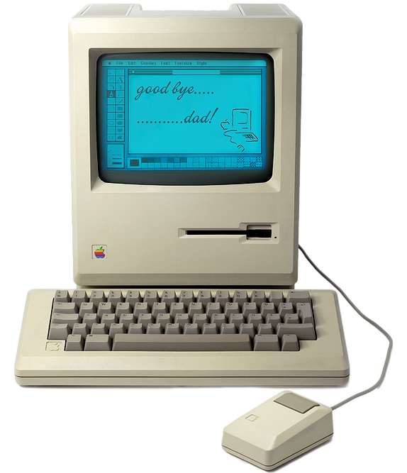
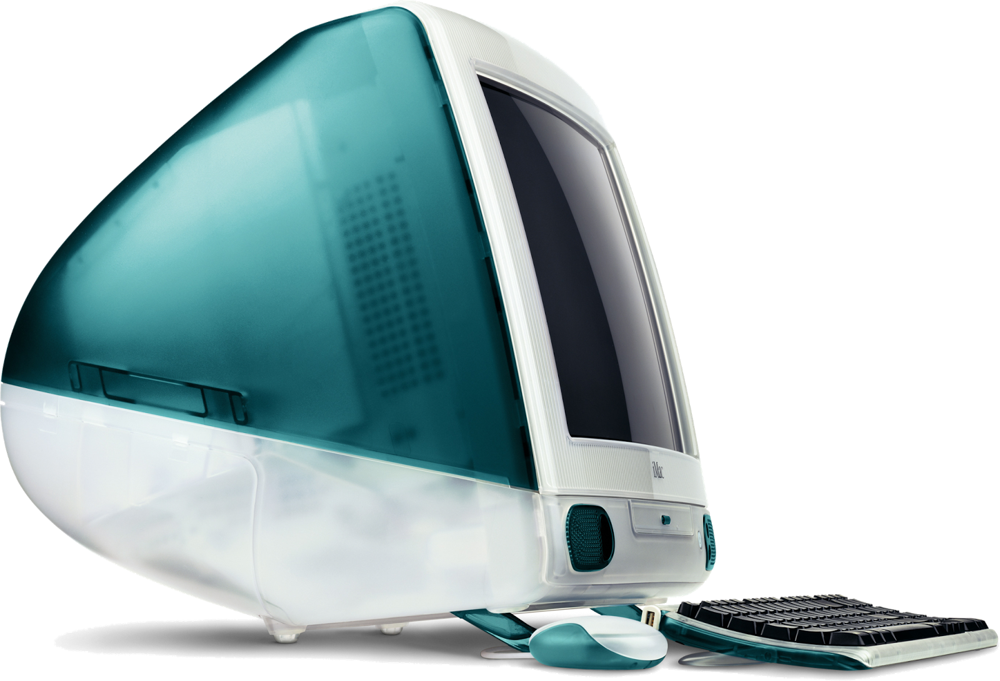
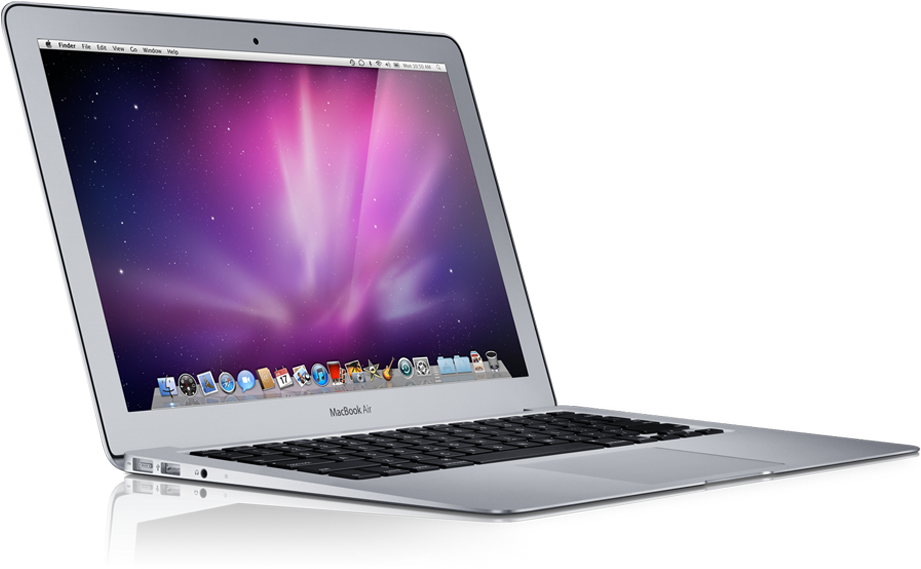
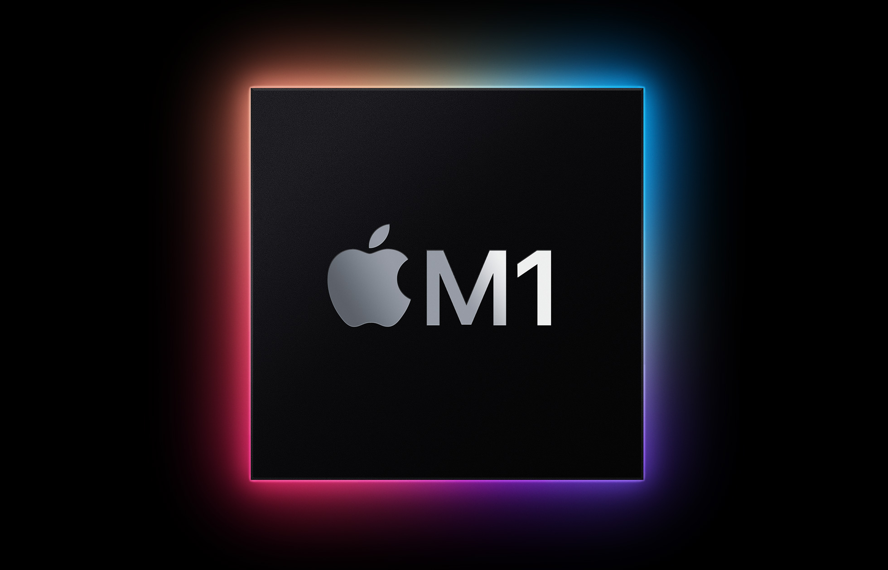

Main
Macs
iPhone
iPad
Watch
AirPods
Why Apple
Apple의 첫 발걸음
Mac
Macintosh 128K
최초의
GUI
가 탑재된 컴퓨터.

< Macintosh 128K >
January 24, 1984, Apple

< iMac G3 >
august 15, 1988, Apple
iMac G3
최초의
소비자용
Apple 제품.
MacBook Air
당대 최고의
초경량
노트북

< MacBook Air >
January 29, 2008, Apple

< M1>
November 10, 2020, Apple
M1
저젼력과 고성능의 만남,
M1